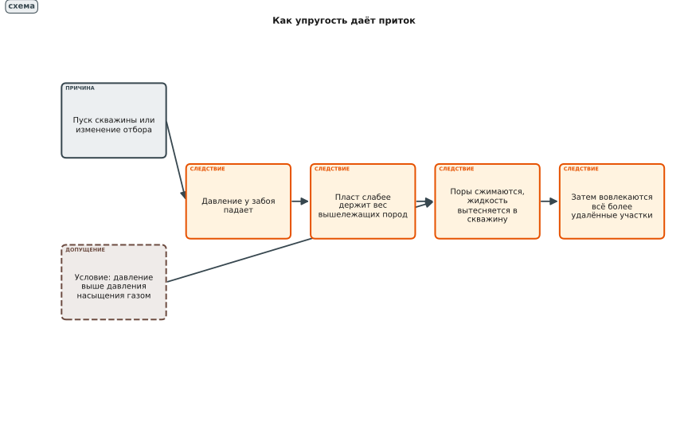

Путь › Что движет жидкость и как это описать › Шаг 1 из 60
Почему пласт отвечает скважине
В книге: «Упругий режим пласта и его характерные особенности» стр. 474
Опирается на: шаг 7 «Зачем изучать упругую фильтрацию» (переход к данным)
Суть
После пуска скважины жидкость сначала движется у забоя, потом всё дальше от него.
Приток идёт за счёт упругости жидкости и породы, а не из «пустого резервуара».
Это основа всей главы об упругом режиме.
Пороговая идея. После пуска скважины приток возникает за счет упругости и начинается рядом с забоем, не во всем пласте сразу. модель
Разбор источника
Определите, где наблюдение, вывод или допущение. Раскройте утверждение, чтобы свериться с ответом и цитатой.
Пуск и остановка скважины или изменение отбора могут вызвать неустановившееся движение.
Наблюдение · стр. 474
«При разработке и эксплуатации месторождений углеводородного сырья в пластах часто возникают неустановившиеся процессы, обусловленные пуском или остановкой скважин, изменением темпов отбора флюида из скважин и т.д.»
При неустановившемся движении давление перераспределяется, скорости фильтрации и дебиты изменяются со временем.
Наблюдение · стр. 474
«Для неустановившихся процессов характерно перераспределение пластового давления, изменение во времени скоростей фильтрационных потоков, дебитов скважин.»
Величины этих изменений зависят от упругих свойств пласта и жидкости.
Наблюдение · стр. 474
«Количественные характеристики неустановившихся процессов (величины изменения давления, скоростей, дебитов) зависят от упругих свойств пластов и насыщающих их жидкостей.»
Приток обеспечивается главным образом энергией упругой деформации нефти или воды и твердого скелета.
Вывод · стр. 474
«Последнее означает, что основной формой пластовой энергии, обеспечивающей приток жидкости к скважинам в рассматриваемых неустановившихся процессах, является энергия упругой деформации жидкостей (нефти и/или воды) и твердого скелета пласта.»
При пуске упругая энергия вовлекает в движение сначала жидкость около забоя, потом все более удаленные участки.
Вывод · стр. 474
«При пуске скважины в эксплуатацию в условиях упругого режима движение жидкости начинается за счет использования потенциальной энергии упругой деформации пласта и жидкости сначала в ближайших окрестностях забоя, затем во все более удаленных областях пласта.»
Снижение давления уменьшает упругое противодействие пласта нагрузке вышележащих пород.
Вывод · стр. 474
«В самом деле, при снижении пластового давления упругое противодействие пласта вышележащему горному массиву уменьшается,»
Уменьшение порового пространства усиливает сжатие жидкости и способствует ее вытеснению в скважину.
Вывод · стр. 474
«и это приводит к уменьшению объема порового пространства, что, в свою очередь, увеличивает сжатие жидкости. Все это способствует вытеснению жидкости из пласта в скважину.»
Даже при малых коэффициентах деформации большой объем пласта и жидкости может дать значительную добычу за счет упругости.
Вывод · стр. 474
«И несмотря на то, что коэффициенты объемной упругой деформации жидкости и твердого скелета пласта очень малы, из-за того, что очень велики объемы пласта и насыщающих его флюидов, объемы жидкости, извлекаемой из пласта за счет упругости пласта и жидкости, могут быть весьма значительными.»
Модель предполагает однофазный поток: давление в любой его точке выше давления насыщения жидкости газом.
Допущение · стр. 474
«Математическая модель, которая будет сформулирована далее, учитывает проявление упругих сил в однофазном фильтрационном потоке, т.е. далее будет считаться, что давление в любой точке потока выше давления насыщения жидкости газом.»
Как это работает
Что запускает процесс
Пуск или остановка скважины меняют условия в пласте. Изменение отбора действует так же. После этого движение становится неустановившимся — меняющимся во времени. стр. 474
«При разработке и эксплуатации месторождений углеводородного сырья в пластах часто возникают неустановившиеся процессы, обусловленные пуском или остановкой скважин, изменением темпов отбора флюида из скважин и т.д.»
При таком движении давление перераспределяется по пласту. Скорости фильтрации (течения жидкости через поры) меняются со временем. Меняется и дебит — объём притока в скважину за единицу времени. стр. 474
«Для неустановившихся процессов характерно перераспределение пластового давления, изменение во времени скоростей фильтрационных потоков, дебитов скважин.»
Насколько сильны эти изменения, зависит от упругих свойств. Важны свойства и пласта, и жидкости. стр. 474
«Количественные характеристики неустановившихся процессов (величины изменения давления, скоростей, дебитов) зависят от упругих свойств пластов и насыщающих их жидкостей.»
Механизм: откуда берётся приток
Автор делает вывод: приток идёт главным образом за счёт энергии упругой деформации. Это обратимое изменение объёма под нагрузкой. Деформируются нефть или вода и твёрдый скелет породы. стр. 474
«Последнее означает, что основной формой пластовой энергии, обеспечивающей приток жидкости к скважинам в рассматриваемых неустановившихся процессах, является энергия упругой деформации жидкостей (нефти и/или воды) и твердого скелета пласта.»

После пуска упругая энергия сначала двигает жидкость около забоя — нижней части скважины. Потом в движение вовлекаются всё более удалённые участки пласта. стр. 474
«При пуске скважины в эксплуатацию в условиях упругого режима движение жидкости начинается за счет использования потенциальной энергии упругой деформации пласта и жидкости сначала в ближайших окрестностях забоя, затем во все более удаленных областях пласта.»
Давление в пласте падает. Тогда пласт слабее противостоит весу вышележащих пород. Поровое пространство уменьшается. стр. 474
«В самом деле, при снижении пластового давления упругое противодействие пласта вышележащему горному массиву уменьшается,»
Меньше пор — сильнее сжата жидкость. Это помогает вытеснять её в скважину. стр. 474
«и это приводит к уменьшению объема порового пространства, что, в свою очередь, увеличивает сжатие жидкости. Все это способствует вытеснению жидкости из пласта в скважину.»
Нюансы и условия
Коэффициенты деформации малы. Но объём пласта и жидкости огромен. Поэтому, по выводу автора, упругость может дать значительную добычу. стр. 474
«И несмотря на то, что коэффициенты объемной упругой деформации жидкости и твердого скелета пласта очень малы, из-за того, что очень велики объемы пласта и насыщающих его флюидов, объемы жидкости, извлекаемой из пласта за счет упругости пласта и жидкости, могут быть весьма значительными.»
Модель предполагает однофазный поток. Давление в любой точке должно быть выше давления насыщения газом. Ниже него из нефти выделяется газ, и модель уже не годится. стр. 474
«Математическая модель, которая будет сформулирована далее, учитывает проявление упругих сил в однофазном фильтрационном потоке, т.е. далее будет считаться, что давление в любой точке потока выше давления насыщения жидкости газом.»
Частая ошибка модель
Ошибка: При пуске давление во всем пласте падает мгновенно.
На самом деле: Сначала жидкость начинает двигаться у забоя; позднее вовлекаются удаленные области. стр. 474
Что это значит для данных
Временные изменения дебита связаны с перераспределением давления, а не с мгновенным откликом всего пласта.
- Вход
- Моменты пуска, остановки и изменения отбора; давление и свойства пласта.
- Выход
- Изменения скорости течения, давления и дебита.
- Где ломается
- При давлении не выше давления насыщения однофазная постановка не подходит.
- гипотеза Ержан: сопоставлять отклики только после синхронизации времени операции и регистрации давления.
Где здесь ручной труд специалиста
- Входные данные
- История отбора и давления.
- Ручные шаги
- Совместить журнал работы скважины и замеры.
- Точки суждения
- Проверить условие однофазности по всему рассматриваемому потоку.
- Время
- Зависит от полноты временных данных.
- Типичные ошибки
- Считать отклик всей области мгновенным.
Аналогия модель
Как отклик распределенной системы на изменение нагрузки: ближайший участок реагирует первым.
Где аналогия перестаёт работать: Отклик пласта распространяется по законам фильтрации, а не как сетевой сигнал.
Глубже
Откуда берется объем модель
Упругая отдача похожа не на слив пустого резервуара, а на извлечение жидкости из сжимающегося насыщенного материала.
Новые понятия
- фильтрация
- Течение жидкости через поры породы. модель
- дебит
- Объем жидкости, проходящий через скважину за единицу времени. модель
- забой
- Нижний участок скважины, у которого начинается приток из пласта. модель
- давление насыщения газом
- Давление начала выделения растворенного газа при снижении давления. модель
- упругая деформация
- Изменение формы или объема, обратимое при снятии нагрузки. модель
Проверь себя
Верный ответ: Жидкость около забоя
Автор пишет, что упругая энергия сначала вовлекает жидкость около забоя. Где это в тексте (стр. 474) →
Верный ответ: Пласт слабее противостоит весу вышележащих пород; Поровое пространство уменьшается; Жидкость сильнее сжата
Падение давления ослабляет противодействие нагрузке, поры сжимаются, жидкость вытесняется. Где это в тексте (стр. 474) →
Верный ответ: Потому что объём пласта и жидкости огромен
Автор объясняет это большим объёмом пласта и жидкости. Где это в тексте (стр. 474) →
Источник
Все утверждения шага с дословной цитатой автора и страницей книги (по PDF).
Пуск и остановка скважины или изменение отбора могут вызвать неустановившееся движение. наблюдение
«При разработке и эксплуатации месторождений углеводородного сырья в пластах часто возникают неустановившиеся процессы, обусловленные пуском или остановкой скважин, изменением темпов отбора флюида из скважин и т.д.»
При неустановившемся движении давление перераспределяется, скорости фильтрации и дебиты изменяются со временем. наблюдение
«Для неустановившихся процессов характерно перераспределение пластового давления, изменение во времени скоростей фильтрационных потоков, дебитов скважин.»
Величины этих изменений зависят от упругих свойств пласта и жидкости. наблюдение
«Количественные характеристики неустановившихся процессов (величины изменения давления, скоростей, дебитов) зависят от упругих свойств пластов и насыщающих их жидкостей.»
Приток обеспечивается главным образом энергией упругой деформации нефти или воды и твердого скелета. вывод
«Последнее означает, что основной формой пластовой энергии, обеспечивающей приток жидкости к скважинам в рассматриваемых неустановившихся процессах, является энергия упругой деформации жидкостей (нефти и/или воды) и твердого скелета пласта.»
При пуске упругая энергия вовлекает в движение сначала жидкость около забоя, потом все более удаленные участки. вывод
«При пуске скважины в эксплуатацию в условиях упругого режима движение жидкости начинается за счет использования потенциальной энергии упругой деформации пласта и жидкости сначала в ближайших окрестностях забоя, затем во все более удаленных областях пласта.»
Снижение давления уменьшает упругое противодействие пласта нагрузке вышележащих пород. вывод
«В самом деле, при снижении пластового давления упругое противодействие пласта вышележащему горному массиву уменьшается,»
Уменьшение порового пространства усиливает сжатие жидкости и способствует ее вытеснению в скважину. вывод
«и это приводит к уменьшению объема порового пространства, что, в свою очередь, увеличивает сжатие жидкости. Все это способствует вытеснению жидкости из пласта в скважину.»
Даже при малых коэффициентах деформации большой объем пласта и жидкости может дать значительную добычу за счет упругости. вывод
«И несмотря на то, что коэффициенты объемной упругой деформации жидкости и твердого скелета пласта очень малы, из-за того, что очень велики объемы пласта и насыщающих его флюидов, объемы жидкости, извлекаемой из пласта за счет упругости пласта и жидкости, могут быть весьма значительными.»
Модель предполагает однофазный поток: давление в любой его точке выше давления насыщения жидкости газом. допущение
«Математическая модель, которая будет сформулирована далее, учитывает проявление упругих сил в однофазном фильтрационном потоке, т.е. далее будет считаться, что давление в любой точке потока выше давления насыщения жидкости газом.»
На этот шаг опираются: шаг 2 «Есть ли у пласта подпитка водой», шаг 3 «Что замедляет перераспределение давления», шаг 4 «Что такое упругий запас», шаг 7 «Зачем изучать упругую фильтрацию», шаг 9 «Из чего складывается модель течения», шаг 13 «Как работает уравнение пьезопроводности», шаг 16 «Три условия для давления», шаг 46 «Где проходит условный фронт давления».